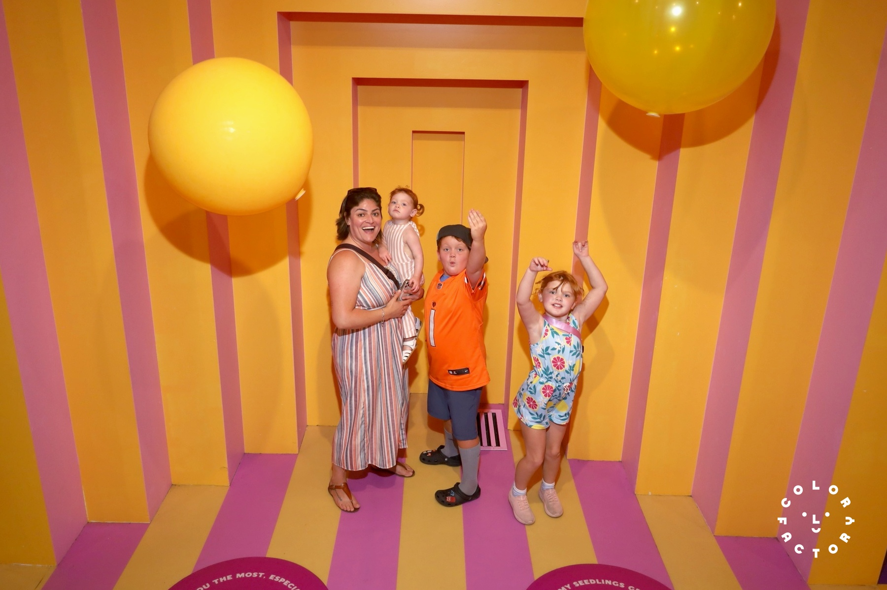
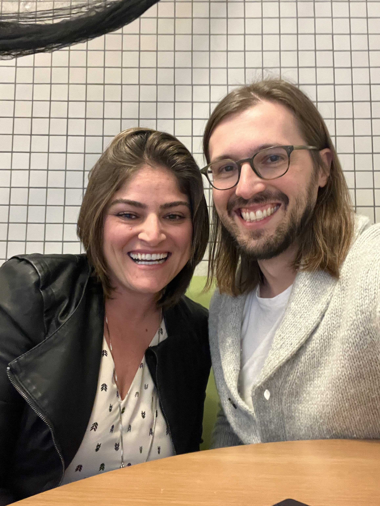
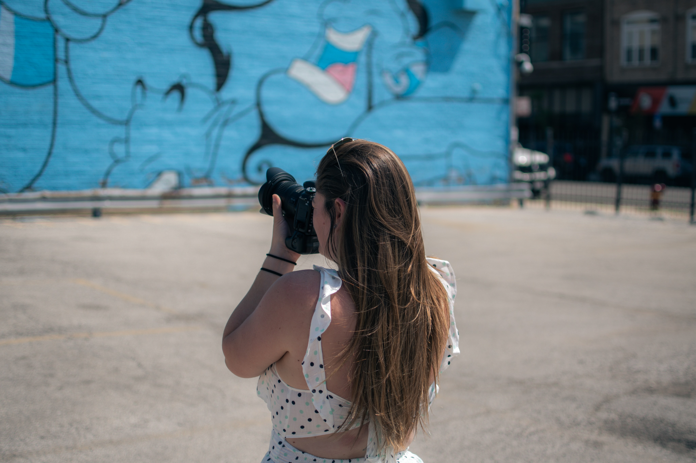
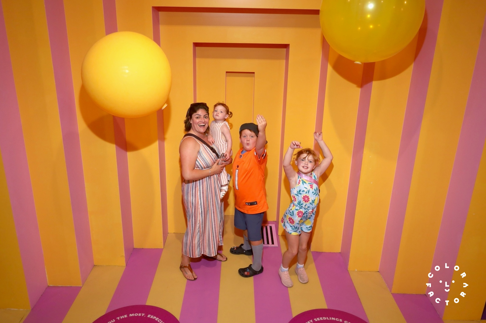
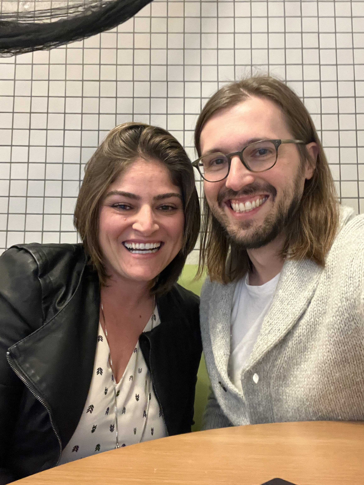
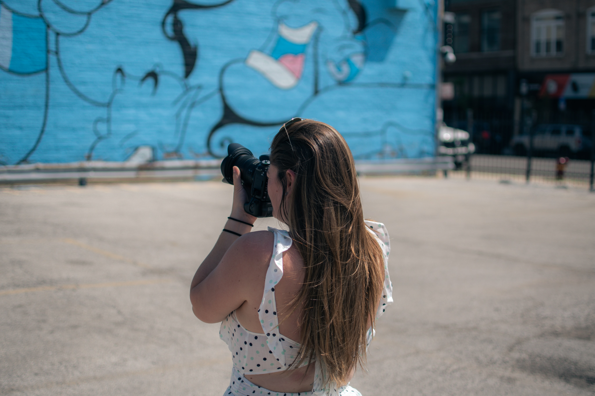

I am a Web Developer, recently graduated from an immersive training program at Fullstack Academy.
Prior to my shift into web development, I was a children's caregiver with 9 years of experience. My work focused on providing the safety and well being of the kids.
For the last several years one of my biggest hobbies has been photography. So I though that when I wanted to make a career transition, photography would be the natural choice. However I found myself drawn to web development while trying to build my own photography website just for curiosity.
I used a low code platform and ended up liking the frontend so much and started to experiment how things are created and organized at the backend as well. I then reached out to some friends who are also developers and asked for some clues of how I could learn more and decided to make this a career.
I then signed up for classes at FSA -one of the most prestigious boot camp schools- and couldn't be happier with my decision. I've undestood that my strengths include Adaptability, Problem Solving and Willingness to Learn. I have always been proud of being bilingual - I am originally from Brazil - but having signed up and concluded a boot camp on something completely new has made me very proud.
I am now looking for opportunities in a company that has a solid Team Work Structure. It would be exciting to learn from Senior Developers and sum my fresh knowledge to them.
As a Junior Developer and a Lifelong Learner, I hope to contribute to the company's growth and be able to improve as a Developer so I can create amazing applications that will make positive changes on people's lives.
 




